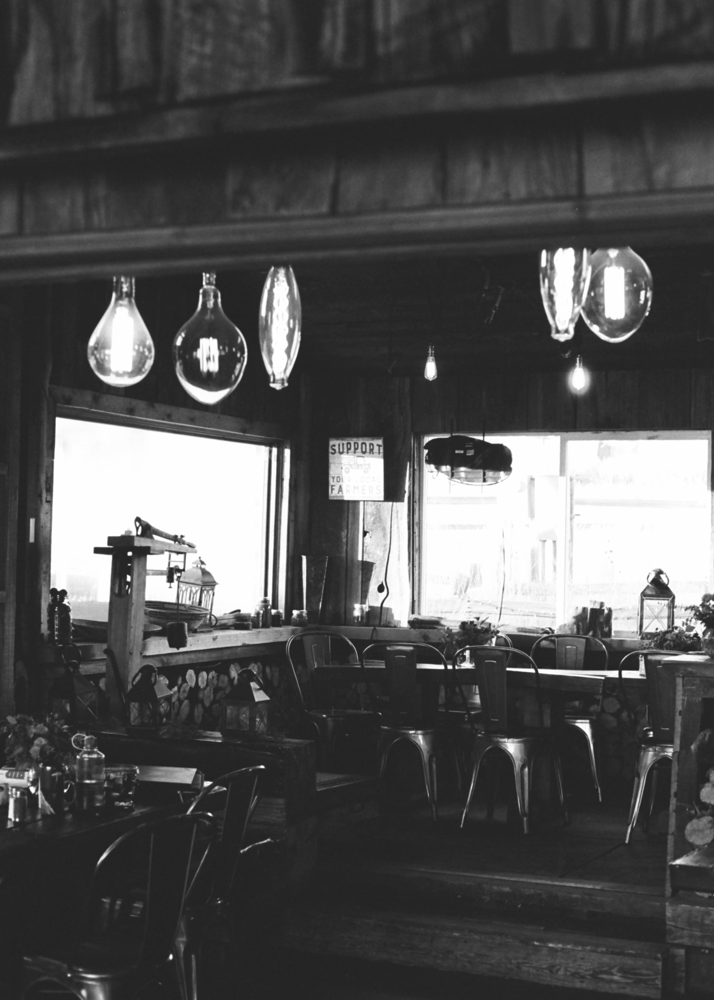
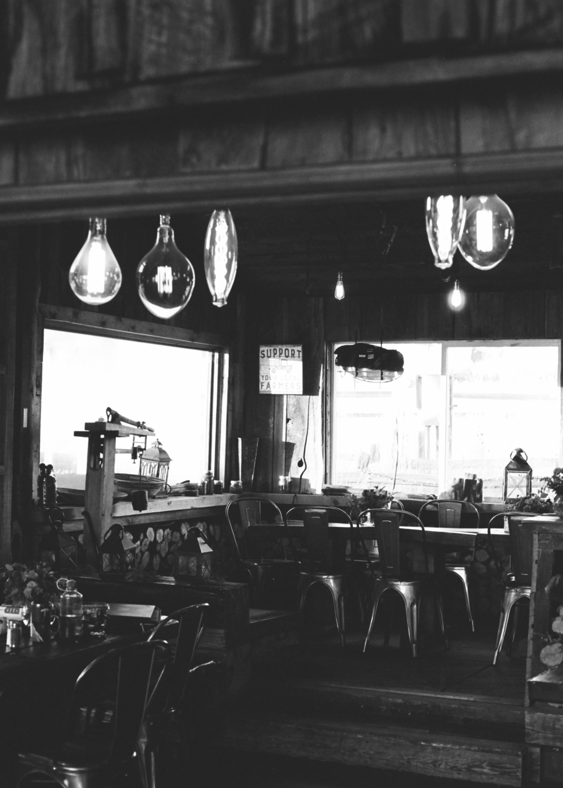

A restaurant is a place where cooked food is sold to the public,and where people sit down to eat it.It is also a place where people go to enjoy the time and to eat a meal.Some restaurants are a chain, meaning that there are restaurants which have
the same name and serve the same food. McDonald's, Burger King and Pizza Hut are examples of chain restaurants that are all over the world. These restaurants serve

 

If you are looking for a standard restaurant website then you must be visit my site, Site "F r e s h and D e l i c i o u s" is an Indian food site where you will get most of indian food. Indian cuisine consists of a variety of regional and
traditional cuisines native to the Indian subcontinent. Given the diversity in soil, climate, culture, ethnic groups, and occupations, these cuisines vary substantially and use locally available
Indian food is also heavily influenced by religion, in particular
Historical events such as invasions, trade relations, and colonialism have played a role in introducing certain foods to this country. The Columbian discovery of the New World brought a number of new vegetables and fruit to India. A number of these
such as